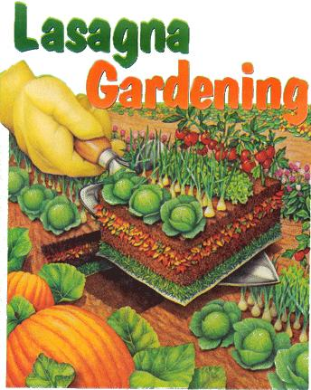

ILLUSTRATIONS BY ELAYNE SEARS
The no-work garden: Leave the sod where it lies, blanket it with wet newspaper to stifle the grass, then begin layering. Before you can say ngiamo, your plot is ready for planting.